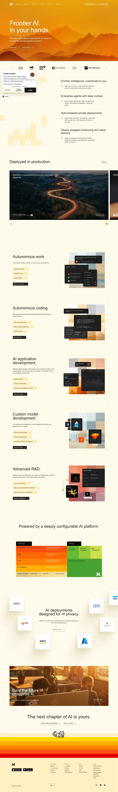

Mistral AI 主题
Mistral AI 的 Design.md 主题展示，围绕AI、媒体内容、SaaS 产品、开发工具组织页面。
Open-weight LLM provider. French-engineered minimalism, purple-toned.
AI媒体内容SaaS 产品开发工具浅色界面B2B 产品效率工具专业工具

来源
- 来源
- getdesign.md
- 镜像
- github:VoltAgent/awesome-design-md
- 网站
- https://mistral.ai/
- 详情
- https://getdesign.md/mistral.ai/design-md
色板
#fa520f: #fa520f#cc3a05: #cc3a05#1f1f1f: #1f1f1f#ffffff: #ffffff#ffd06a: #ffd06a#ffb83e: #ffb83e#ffa110: #ffa110#ff8105: #ff8105#ff8a00: #ff8a00#ffd900: #ffd900#fff8e0: #fff8e0#fffaeb: #fffaeb
字体
display: PP Editorial Oldbody: Intermono: JetBrains Monohints: PP Editorial Old,Inter,JetBrains Mono
圆角
control: 8pxcard: 12pxpreview: 12pxpill: 9999pxsource: design-md
间距
xxs: 4pxxs: 8pxsm: 12pxmd: 16pxlg: 20pxxl: 24pxxxl: 32pxxxxl: 40pxsection-sm: 48pxsection: 64pxsection-lg: 96pxhero: 120pxsource: design-md
使用建议
建议
- 建议：Reserve {colors.primary} (saturated orange) for primary CTAs and active states only。
- 建议：Use the sunset stripe band at the foot of every page — it's the brand's most recognizable signature。
- 建议：Pair PP Editorial Old (display) with Inter (UI) — never substitute either with a generic alternative。
- 建议：Apply {rounded.md} (8px) to buttons and {rounded.lg} (12px) to cards consistently。
- 建议：Use cream-yellow surfaces ({colors.cream}) for form panels, feature cards, and footer。
避免
- 避免：use pill-shaped buttons ({rounded.full}) — Mistral's geometry is sober and editorial, not playful。
- 避免：introduce additional accent colors beyond the orange/yellow/cream sunset palette。
- 避免：reduce hero leading below 1.05 — the editorial display needs that magazine-grade tightness。
- 避免：replace PP Editorial Old hero displays with Inter — the editorial / sans contrast IS the brand。
- 避免：apply heavy shadows on flat documentation cards; reserve elevation for IDE mockups。
查看 DESIGN.md